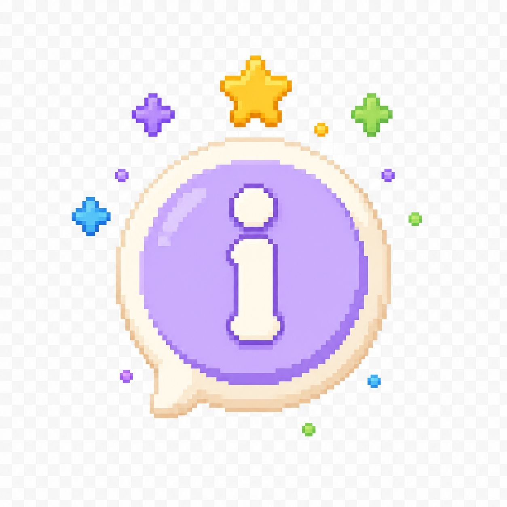

O que é Libras?
Libras é uma língua visual e gestual. Ela utiliza sinais feitos com as mãos, expressões do rosto e movimentos do corpo.
Informações
Conheça a Língua Brasileira de Sinais, sua história, importância e benefícios.

Libras aproxima pessoas e ajuda na participação de estudantes surdos em diferentes espaços da escola e da comunidade.
Libras é uma língua visual e gestual. Ela utiliza sinais feitos com as mãos, expressões do rosto e movimentos do corpo.
A Libras se desenvolveu no Brasil a partir do contato entre pessoas surdas e educadores. Ela foi reconhecida oficialmente pela Lei nº 10.436, de 24 de abril de 2002.
Cada novo sinal ajuda a construir uma comunidade mais acolhedora.
Aprender Libras ajuda na comunicação com pessoas surdas e incentiva o respeito às diferenças. O aprendizado desenvolve atenção visual, empatia e participação social.
Este espaço poderá crescer com vídeos dos sinais, histórias interativas e novos desafios de vocabulário.
Esta área é informativa e poderá receber imagens ou vídeos futuramente.